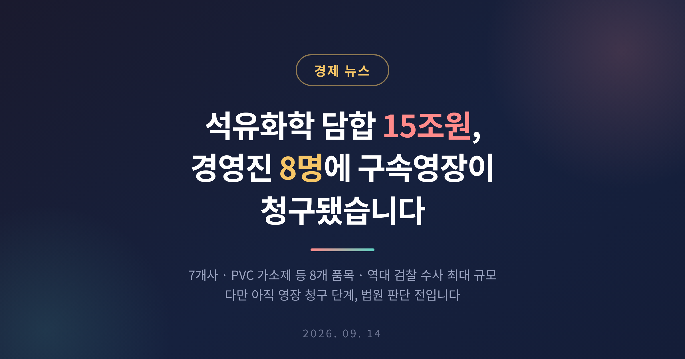
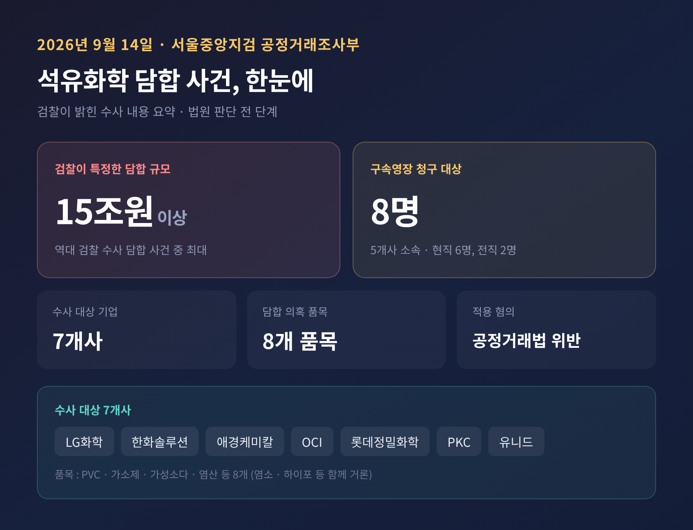
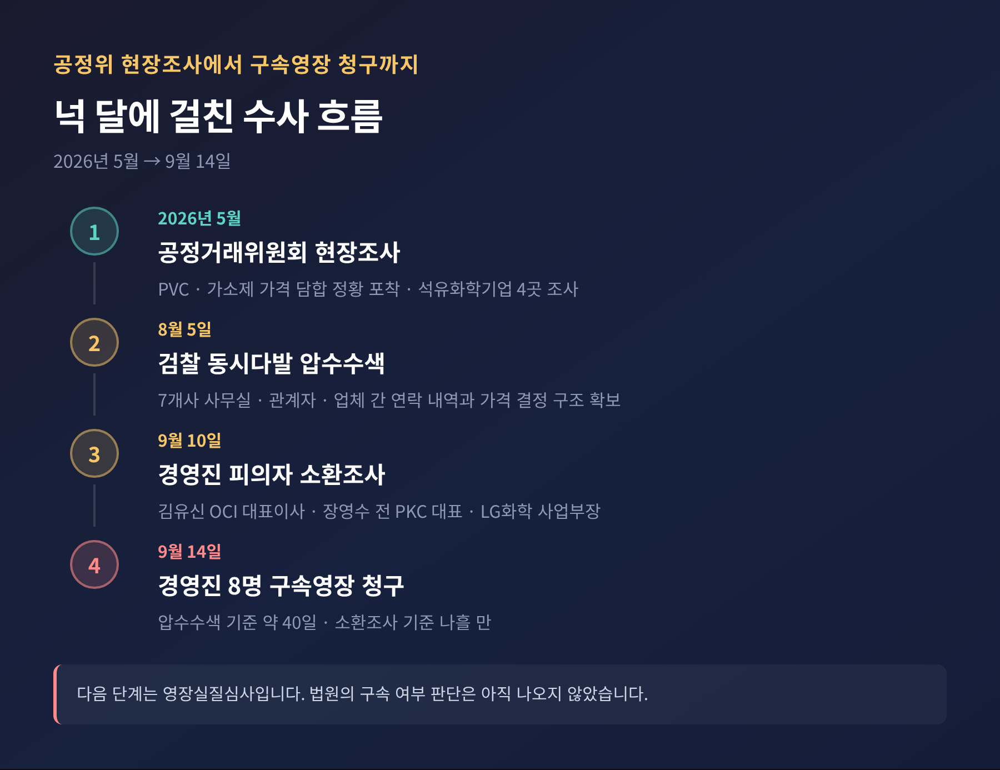
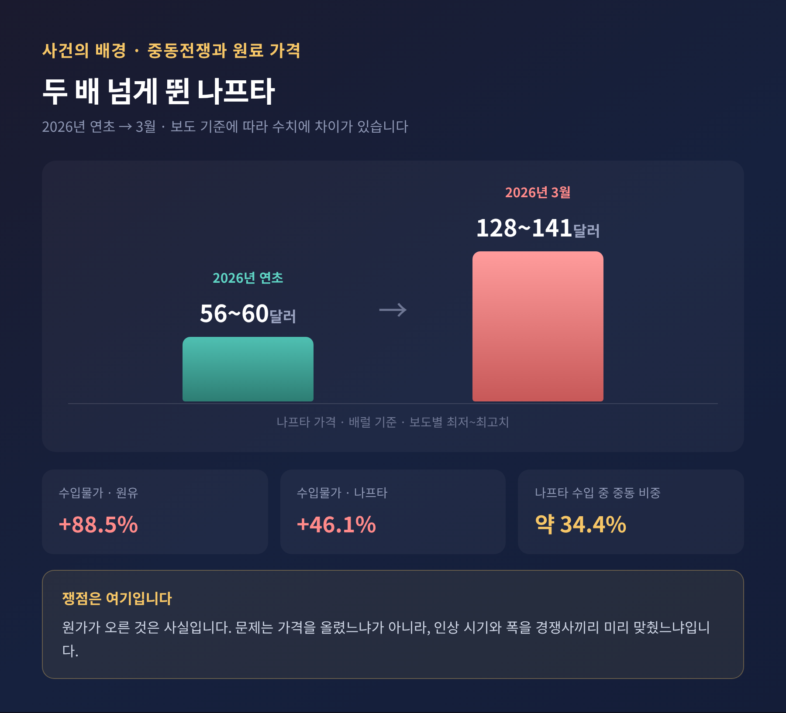
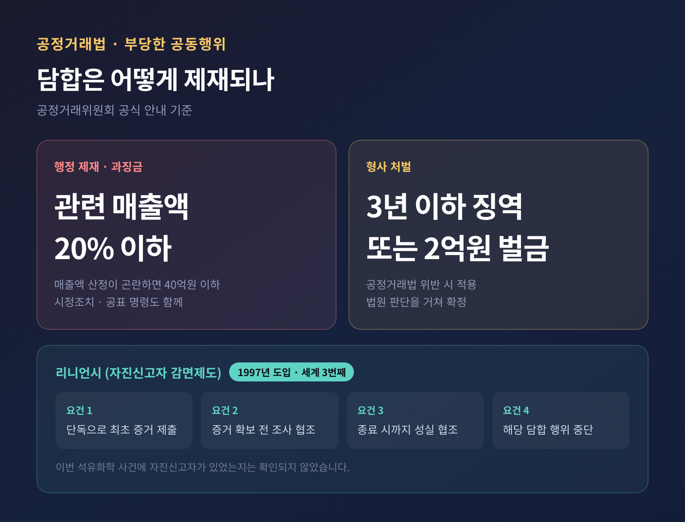
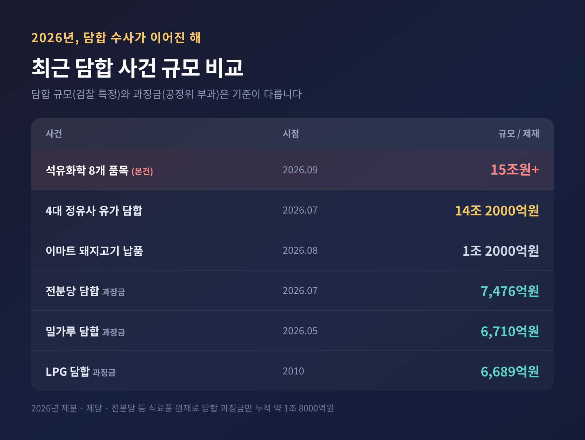

오늘은 2026년 9월 14일 나온 석유화학제품 가격 담합 수사 소식을 정리해 보려 합니다. 검찰이 특정한 담합 규모가 15조원을 넘어, 역대 검찰 수사 담합 사건 가운데 최대라는 점에서 무게가 다릅니다. 아직 법원의 판단이 나오지 않은 수사 단계라는 점을 먼저 말씀드립니다.
서울중앙지방검찰청 공정거래조사부가 움직였습니다. 부장검사는 나희석 검사입니다.
이 부서는 9월 14일 석유화학업체 전·현직 임원 8명에 대해 공정거래법 위반 혐의로 구속영장을 청구했습니다. 이름이 공개된 인물은 김유신 OCI 대표이사와 장영수 전 PKC 대표이사, 그리고 PKC의 배 모 영업본부장입니다. 여기에 LG화학과 롯데정밀화학, 애경케미칼의 전·현직 임원도 포함된 것으로 전해집니다. 8명은 모두 5개 회사 소속이며, 이 가운데 6명이 현직, 2명이 전직 임원으로 알려졌습니다.
검찰이 의심하는 혐의는 분명합니다. LG화학과 한화솔루션, 애경케미칼, OCI, 롯데정밀화학, PKC, 유니드 등 7개 업체가 수년에 걸쳐 석유화학제품 8개 품목의 가격 인상 시기와 인상 폭을 사전에 협의했다는 것입니다. 품목으로는 폴리염화비닐(PVC)과 가소제, 가성소다, 염산이 공통으로 거론되고, 염소와 하이포 등이 함께 언급됩니다.

수사는 넉 달에 걸쳐 단계적으로 진행됐습니다.
시작은 검찰이 아니라 공정거래위원회였습니다. 공정위는 지난 5월 PVC와 가소제 등의 가격 담합 정황을 포착하고 석유화학기업 4곳을 현장조사했습니다. 이후 검찰이 별도로 강제수사에 나서면서 대상은 7곳으로 늘어났습니다.
8월 5일, 검찰은 7개 업체의 사무실과 사건 관계자를 동시다발로 압수수색했습니다. 업체 간 연락 내역과 회사별 가격 결정 구조를 확보하기 위한 조치였습니다. 한 달여가 지난 9월 10일에는 김유신 대표이사와 장영수 전 대표, LG화학의 PVC·가소제 사업부장인 전무급 임원을 피의자 신분으로 불러 조사했습니다. 그리고 나흘 만에 영장 청구로 이어졌습니다. 압수수색을 기준으로 하면 약 40일입니다.

이 사건이 주목받는 첫 번째 이유는 규모입니다.
검찰이 특정한 담합 규모는 15조원 이상입니다. 검찰이 수사한 담합 사건 가운데 최대 규모라는 설명이 붙었습니다. 검찰은 이 과정에서 생긴 부당이익이 수조원대에 이를 것으로 의심하고 있습니다.
비교 대상이 있습니다. 불과 두 달 전인 7월 6일, 같은 부서가 4대 정유사를 유가 담합 혐의로 기소했습니다. 당시 직접 담합 규모는 14조 2000억원, 경쟁 제한 효과는 26조원으로 제시됐습니다. 그때가 역대 최대였습니다. 이번 사건이 그 기록을 넘어섰습니다.
다만 숫자를 읽을 때 주의가 필요합니다. 15조원은 담합이 있었다고 검찰이 보는 기간 동안의 관련 거래 규모를 뜻하며, 그 금액만큼 소비자가 손해를 봤다는 의미는 아닙니다. 실제 부당이익 규모와 소비자 피해액은 별도의 판단이 필요한 영역입니다.
이 사건에서 가장 조심스럽게 봐야 할 대목이 여기입니다.
2026년 상반기, 석유화학제품 원가는 실제로 크게 올랐습니다. 원인은 중동전쟁이었습니다. 호르무즈 해협이 봉쇄되면서 석유화학의 기초 원료인 나프타 수급이 흔들렸습니다. 우리나라 나프타 수입에서 중동이 차지하는 비중은 약 34.4%에 이릅니다.
가격은 급격히 뛰었습니다. 연초 50~60달러대에서 거래되던 나프타는 3월 들어 120~140달러대까지 올랐습니다. 기준 시점에 따라 두 배에서 두 배 반 사이의 상승입니다. 같은 기간 수입물가에서 원유는 88.5%, 나프타는 46.1% 올랐습니다. 여파는 석유화학 안에 머물지 않았습니다. 페인트 가격이 최대 55% 인상되고, 가구와 인테리어, 생활가전까지 원가 부담이 번졌습니다.

그러니 "가격을 올린 것 자체"는 담합의 증거가 되지 않습니다. 원가가 오르면 제품 가격도 오릅니다. 그것은 시장의 정상적인 작동입니다.
검찰이 문제 삼는 것은 다른 지점입니다. 원료 수급이 불안해진 국면을 이용해, 경쟁사끼리 인상 시기와 폭을 미리 맞췄는지 여부입니다. 각자 판단해서 올렸다면 경쟁입니다. 서로 연락해서 맞췄다면 담합입니다. 결과가 비슷해 보여도 성격은 전혀 다릅니다.
증명은 쉽지 않습니다. 검찰이 압수수색에서 업체 간 연락 내역과 가격 결정 구조 자료부터 확보한 이유가 여기 있습니다.
담합 대상으로 지목된 품목들은 소비자에게 익숙하지 않습니다. 그래서 오히려 살펴볼 필요가 있습니다.
PVC는 석유에서 얻은 원료와 소금에서 추출한 원료를 결합해 만드는 합성 플라스틱입니다. 건축자재, 상하수도 파이프, 전선 피복에 널리 쓰입니다. 가소제는 그 PVC를 부드럽고 유연하게 만드는 첨가제입니다. 바닥재와 필름, 호스에 들어갑니다. 가성소다는 제지와 섬유, 알루미늄 공정에 쓰이는 기초 화학물질이고, 염산과 염소는 수처리와 살균에 쓰입니다.
공통점이 보입니다. 모두 최종 소비재가 아니라 산업 중간재입니다.
중간재 담합은 소비자가 알아채기 어렵습니다. 라면값이나 밀가루값이 오르면 바로 체감합니다. 그러나 PVC 가격이 올랐다는 사실은 소비자에게 전달되지 않습니다. 대신 건설사와 건자재 업체, 플라스틱 가공업체의 원가로 흡수됐다가, 시차를 두고 아파트 자재비와 생활용품 가격에 조금씩 얹힙니다.
피해가 넓게 퍼지는 대신 옅게 퍼진다는 뜻입니다. 그래서 개인이 문제를 제기하기 어렵고, 공적 기관이 나서야 하는 영역이기도 합니다.
법이 정한 제재는 두 갈래입니다.
행정 제재로는 시정조치와 과징금이 있습니다. 과징금은 관련 매출액의 20% 이하로 부과됩니다. 관련 매출액을 산정하기 어려우면 40억원 이하가 기준이 됩니다. 형사 처벌은 3년 이하의 징역 또는 2억원 이하의 벌금입니다.
여기에 자진신고자 감면제도, 이른바 리니언시가 있습니다. 담합에 가담한 기업이 증거와 함께 스스로 신고하면 시정조치와 과징금, 고발을 감면받는 제도입니다. 우리나라는 1997년에 도입했습니다. 미국과 유럽연합에 이어 세계에서 세 번째였습니다.
1순위 감면을 받으려면 조건이 까다롭습니다. 당국이 충분한 증거를 확보하기 전에, 단독으로 가장 먼저 증거를 제출해야 합니다. 조사가 끝날 때까지 성실히 협조해야 하고, 담합 행위도 중단해야 합니다.

담합 사건이 내부 자진신고로 드러나는 경우가 많은 것도 이 제도 때문입니다. 다만 이번 석유화학 사건에 자진신고자가 있었는지는 확인되지 않았습니다. 추측할 일은 아닙니다.
이번 사건을 하나의 사건으로만 보면 맥락을 놓칩니다.
2026년은 담합 수사와 제재가 잇따른 해였습니다. 5월에는 밀가루 담합으로 제분 7개사에 6710억원의 과징금이 부과됐습니다. 7월에는 전분당 담합 4개사에 7476억원이 매겨졌습니다. 공정위 기준 역대 최대 과징금입니다. 8월에는 이마트 돼지고기 납품업체들의 1조 2000억원대 담합 사건이 재판에 넘겨졌습니다. 제분·제당·전분당 등 식료품 원재료 담합에 부과된 과징금만 이미 1조 8000억원에 이릅니다.
여기에 7월의 정유사 사건, 그리고 이번 석유화학 사건이 더해졌습니다. 식탁에서 시작해 주유소를 거쳐 건설 현장까지 왔습니다.

배경에는 제도 변화도 있습니다. 2026년 10월 검사의 직접수사 권한이 폐지될 예정입니다. 언론은 이를 두고 검찰이 물가 교란 행위 수사에 막바지 총력을 기울이는 양상이라고 해석했습니다. 실제로 서울중앙지검 공정거래조사부는 최근 1년 사이 설탕과 밀가루, 전분당, 정유, 한국전력 입찰 담합을 처리했고, 반도체 부품 가격 담합도 수사 중입니다.
한 가지 역설을 짚고 가겠습니다.
국내 석유화학 업계는 지금 구조조정 국면에 있습니다. 중국과 중동의 대규모 설비 증설, 중국의 자급률 상승으로 범용제품 공급과잉이 길어졌기 때문입니다. 정부는 석유화학·철강 특별법을 시행해 사업 재편과 설비 폐쇄를 지원하고 있습니다. 9월 1일에는 사업재편 1호로 H&L어드밴스드가 출범해, 롯데케미칼 대산 NCC 110만톤의 가동을 3년에 걸쳐 중단하는 작업에 들어갔습니다. 업계 전체의 자율 감축 목표는 270만~370만톤입니다.
예전에는 증설이 경쟁력이었습니다. 지금은 얼마나 줄이느냐가 생존의 조건이 됐습니다.
그런 시기에 가격 담합 혐의가 제기됐습니다. 구조조정과 이번 혐의를 곧바로 인과로 연결한 분석은 아직 없습니다. 다만 업황이 어려울수록 가격 경쟁을 피하려는 유인이 커진다는 점은, 담합 규제가 왜 존재하는지를 다시 생각하게 합니다.
가장 가까운 일정은 영장실질심사입니다. 이르면 이번 주 안에 열릴 것으로 전망됩니다. 법원이 8명의 구속 여부를 판단하는 자리입니다. 여기서 나온 결과가 이후 수사의 속도를 좌우합니다.
그다음은 공정위의 판단입니다. 공정위는 5월부터 조사를 진행해 왔지만 아직 제재를 확정하지 않았습니다. 검찰 수사 결과가 공정위보다 먼저 나올 가능성도 거론됩니다.
그리고 법정 공방이 남습니다. 참고할 전례가 있습니다. 7월에 기소된 정유 4사는 8월 첫 재판에서 "가격 상승에 영향을 줬다는 것은 사실이 아니다"라며 혐의를 부인했습니다. 담합 사건은 기소 이후에도 오랜 시간 다퉈집니다. 이번 사건도 다르지 않을 것입니다.
수사 대상이 된 기업들의 입장도 짚어 두겠습니다. LG화학과 한화솔루션, OCI는 별도의 공식 입장을 내놓지 않은 채, 조사 절차에 성실히 대응하겠다는 취지만 밝힌 것으로 전해집니다.
마지막으로 한 번 더 강조하겠습니다. 지금은 혐의가 제기된 단계입니다. 검찰이 구속영장을 청구했을 뿐, 법원은 아직 판단하지 않았습니다. 기업과 개인의 유무죄는 재판을 통해 가려집니다. 무죄추정의 원칙은 규모가 큰 사건일수록 더 엄격하게 지켜져야 합니다.
정리하면 이렇습니다.
15조원이라는 숫자는 분명 크고, 대상 품목은 우리 생활 곳곳에 스며 있습니다. 그러나 이 사건의 본질은 금액이 아닙니다. "가격을 올린 것이 아니라, 함께 올렸는지가 문제입니다." 원가가 오른 시기에도 각자 판단해 결정했는지, 아니면 미리 맞췄는지. 그 차이가 시장의 신뢰를 가릅니다.
아직 답이 나오지 않았습니다. 답이 언제 나오겠냐고 물으신다면, 서두르지 말고 법원의 판단을 기다려 보자고 말씀드리겠습니다.